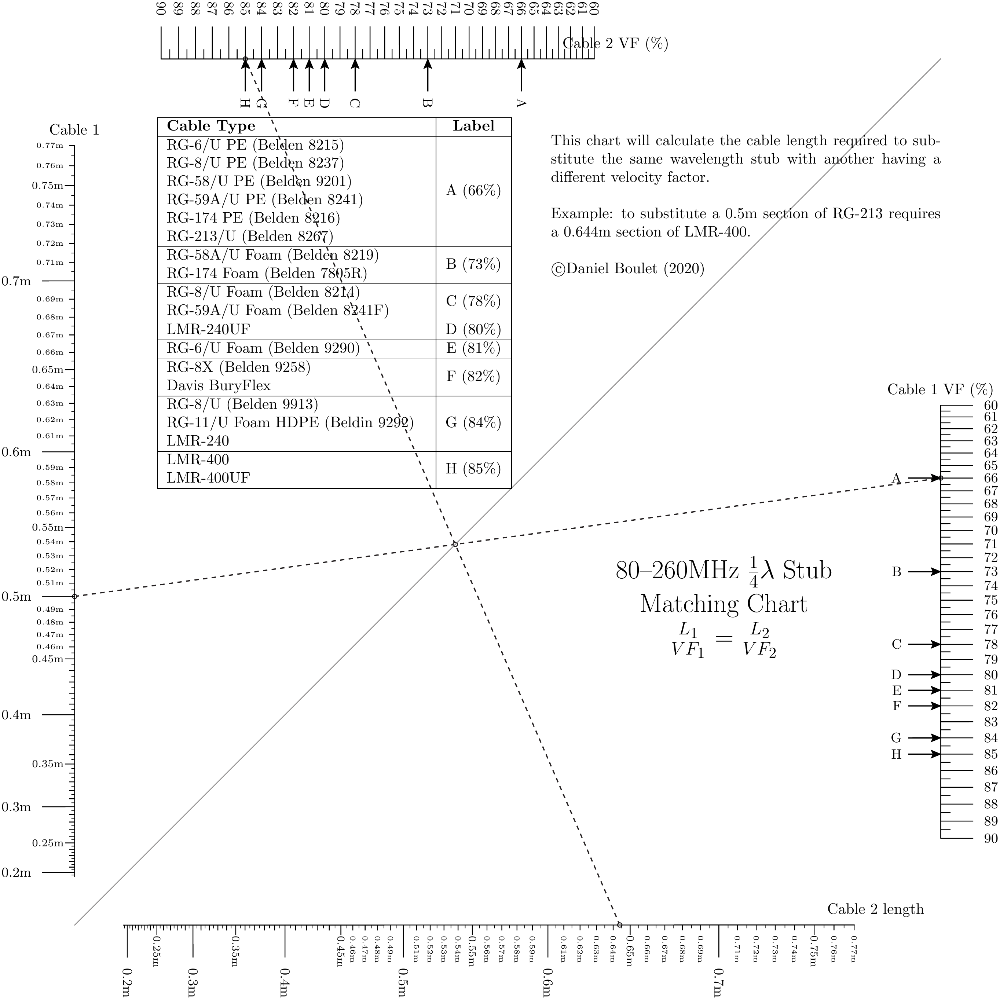

Velocity Factor Calculator¶
\(\frac{1}{4}\lambda\) matching stubs can be created with different types of coax cable. However the velocity factor of coax cables varies by type and manufacturer. This nomograph allows an engineer to substitute one type of cable for another of different length and velocity factor.
Nomograph¶
Source code¶
1"""
2 vf_calculator.py
3
4 Stub matching nomogram for 80 to 260 MHz range.
5"""
6
7from pynomo.nomographer import Nomographer
8import sys
9from pyx import *
10text.set(text.LatexEngine)
11sys.path.insert(0, "..")
12outputfile = sys.argv[0].split('.')[0]+'.pdf'
13
14text.preamble(r"\usepackage{array}")
15
16scalingFactor = 2
17shortest_wavelength = 0.19250
18longest_wavelength = 0.77001
19
20stub_length_1 = {
21 'u_min': shortest_wavelength,
22 'u_max': longest_wavelength,
23 'function': lambda u: u**scalingFactor,
24 'title': r'Cable 1',
25 'tick_levels': 5,
26 'tick_text_levels': 4,
27 'text_format': r'$%2.2g$m',
28 'scale_type': 'linear smart',
29 'tick_side': 'left',
30}
31vel_factor_1 = {
32 'u_min': 60,
33 'u_max': 90,
34 'function': lambda u: (u/100)**scalingFactor,
35 'title': r'Cable 1 VF (\%)',
36 'tick_levels': 3,
37 'text_format': r'$%2.2g$',
38 'tick_text_levels': 1,
39 'scale_type': 'linear smart',
40 'tick_side': 'right',
41 'extra_params': [
42 {
43 'scale_type': 'manual arrow',
44 'arrow_length': 0.75,
45 'manual_axis_data': {
46 66: r'A',
47 73: r'B',
48 78: r'C',
49 80: r'D',
50 81: r'E',
51 82: r'F',
52 84: r'G',
53 85: r'H',
54 },
55 'tick_side': 'left'
56 }
57 ]
58}
59
60stub_length_2 = {
61 'u_min': shortest_wavelength,
62 'u_max': longest_wavelength,
63 'function': lambda u: u**scalingFactor,
64 'title': r'Cable 2 length',
65 'tick_levels': 5,
66 'tick_text_levels': 4,
67 'text_format': r'$%2.2g$m',
68 'scale_type': 'linear smart',
69 'tick_side': 'right',
70 'title_x_shift': 0.5,
71 'title_rotate_text': True,
72}
73vel_factor_2 = {
74 'u_min': 60,
75 'u_max': 90,
76 'function': lambda u: (u/100)**scalingFactor,
77 'title': r'Cable 2 VF (\%)',
78 'tick_levels': 5,
79 'tick_text_levels': 4,
80 'scale_type': 'linear smart',
81 'tick_side': 'left',
82 'title_rotate_text':True,
83 'title_x_shift': 0.5,
84 'extra_params': [
85 {
86 'scale_type': 'manual arrow',
87 'arrow_length': 0.75,
88 'manual_axis_data': {
89 66: r'A',
90 73: r'B',
91 78: r'C',
92 80: r'D',
93 81: r'E',
94 82: r'F',
95 84: r'G',
96 85: r'H',
97 },
98 'tick_side': 'right'
99 }
100 ]
101
102}
103
104block_1_params = {
105 'block_type': 'type_4',
106 'f1_params': stub_length_1,
107 'f2_params': vel_factor_1,
108 'f3_params': stub_length_2,
109 'f4_params': vel_factor_2,
110 'isopleth_values': [[0.5, 66, 'x', 85]],
111 'reference_color': color.cmyk.Gray
112}
113
114main_params = {
115 'filename': outputfile,
116 'paper_height': 20.0,
117 'paper_width': 20.0,
118 'block_params': [block_1_params],
119 'transformations': [('rotate', 0.01), ('scale paper',)],
120 'title_box_width':7.0,
121 'title_str': r'\LARGE 80--260MHz $\frac{1}{4}\lambda$ Stub Matching Chart \par $\frac{L_1}{VF_1}=\frac{L_2}{VF_2}$',
122 'title_x':15.0,
123 'title_y': 8.0,
124 # 'make_grid': True,
125 'extra_texts': [
126 {
127 'x': 1,
128 'y': 19,
129 'text': r'\begin{center} \begin{tabular}{| m{6cm} | c | } \hline \bf{Cable Type} & \bf{Label} \\ \hline RG-6/U PE (Belden 8215) \newline RG-8/U PE (Belden 8237) \newline RG-58/U PE (Belden 9201) \newline RG-59A/U PE (Belden 8241) \newline RG-174 PE (Belden 8216) \newline RG-213/U (Belden 8267) & A (66\%) \\ \hline RG-58A/U Foam (Belden 8219) \newline RG-174 Foam (Belden 7805R) & B (73\%) \\ \hline RG-8/U Foam (Belden 8214) \newline RG-59A/U Foam (Belden 8241F) & C (78\%) \\ \hline LMR-240UF & D (80\%) \\ \hline RG-6/U Foam (Belden 9290) & E (81\%) \\ \hline RG-8X (Belden 9258) \newline Davis BuryFlex & F (82\%) \\ \hline RG-8/U (Belden 9913) \newline RG-11/U Foam HDPE (Beldin 9292) \newline LMR-240 & G (84\%) \\ \hline LMR-400 \newline LMR-400UF & H (85\%) \\ \hline \end{tabular} \end{center}',
130 'width': 10.0,
131 },
132 {
133 'x': 11.0,
134 'y': 18,
135 'text': r'\noindent This chart will calculate the cable length required to substitute the same wavelength stub with another having a different velocity factor. \newline \newline Example: to substitute a 0.5m section of RG-213 requires a 0.644m section of LMR-400. \newline \newline \copyright Daniel Boulet (2020)',
136 'width': 9.0,
137 },
138 ],
139
140
141}
142Nomographer(main_params)